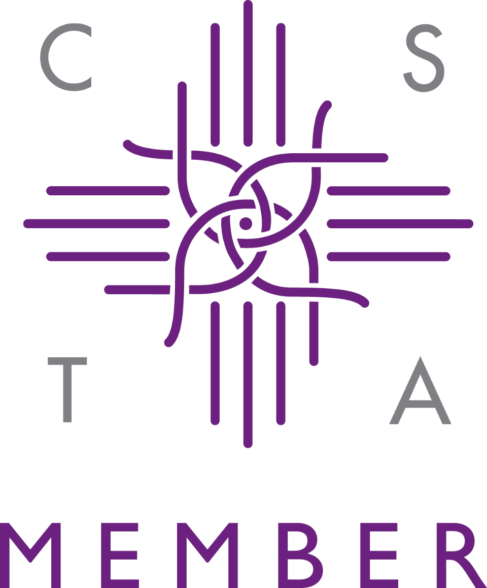

Craniosacral Therapy
In The City
Jane Bennett RCST practices Craniosacral Therapy, a powerful effective therapy
for the treatment of anxiety and stress related symptoms,
medical conditions, physical injuries and trauma in Spitalfields, East London.